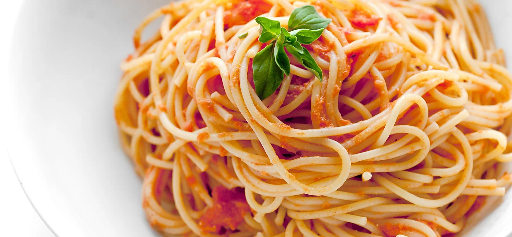

spagetti

Ingridiënten
- 1 kg Gehakt(h.o.h)
- 500 gr gesneden uien
- 2-3 tenen knoflook
- 1/2 l tomatensaus (2 kartonnetjes
- 250 ml creme fraiche
- 1 groot blikje tomaten puree
- flinke scheut maggi
- zout/peper naar smaak
- ongeveer 1 el suiker
Bereiding
- Gehakt rullen, uien/knoflook erbij. Vervolgens overige ingredienten.
- roeven en naar smaak van het een of ander wat meer toevoegen.
- Minstens een half uurtje heel zachtjes laten sudderen. De suiker versterkt de tomatensmaak, de maggi is onmisbaar